来源：https://e0fyf6d01a5.feishu.cn/docx/L8xcdXIj7o7fBBxc21OcwdDenFh
大家好，我是子白。最近潜水了一段时间，有没有想我（^—^）。我常说，当一个活跃分子从朋友圈销声匿迹，甭问，肯定是闷头赚钱去了。11月开始，我一直泡在跨境孵化基地里，研究卖货（胖了，不要介意）。
公司主营是tiktok带货，但我这次给大家选个简单点的平台实操：ozon，没有月租，没有保证金，店铺不分品类什么都能卖，注册门槛也低，再加上后台页面全是中文的，适合小白跨境卖家。
老规矩，先上图。新开的店，12月15日到1月28日，销售额278万卢布（22万人民币），利润3.5万，1个人兼职做就够了，全职的话可以同时管理3-5个店铺。我们整理了详细的ozon开店教程和小tips，我也不搞加V领资料这一套了，pdf直接放在文末，大家自己领取。
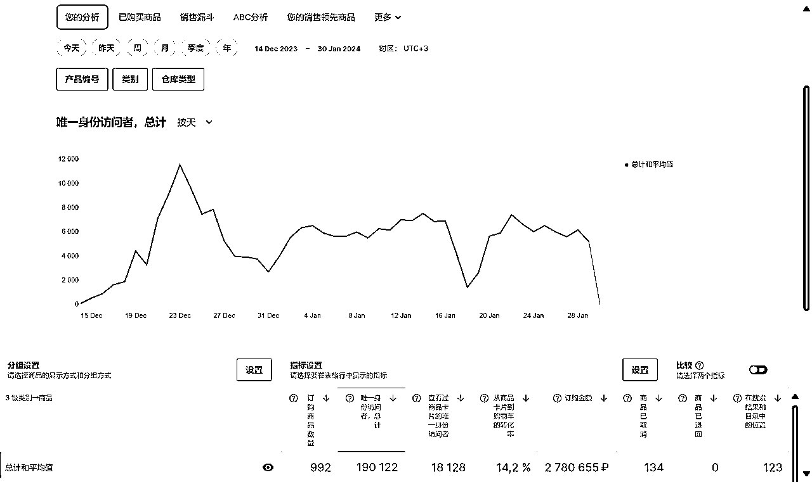
先科普一下，ozon是俄罗斯第二大电商平台，对标国内淘宝。ozon好几年前就在招商了，只是那时候，亚马逊、ebay、速卖通这些老牌平台才是跨境卖家的首选。
单说俄罗斯市场，早几年ozon就是不如速卖通。但ozon怎么突然火了？无非是老牌平台都开卷了，卖家收益下降，恰好这个时候ozon数据看着还行，操作也简单，于是不少人开始尝试，服务商嗅到了赚钱的味道，自然开始推广。
要说ozon是黑马，绝对扯淡，但综合看下来，相比于其他跨境电商平台，ozon店铺稳定，正常经营的店铺不会被封店，并且ozon客服的支持很到位。
跨境电商平台一通百通，语言、实操不一样，逻辑大差不差。一些亚马逊卖家，把被下架的品挂在ozon上面卖，谁规定一个人只能做一个平台了是吧？所以即使是老卖家，也不妨尝试一下。
有条件的，尽量开本土店，本土店流量更好，有门槛所以竞争对手更弱：本土店只能用俄罗斯公司开，从ozon回款有6%的税，需要一个俄罗斯仓库囤货。这3条把大多数小卖家拦在门外，所以本篇所说的ozon店默认是跨境店铺。另外，卢布汇率波动大，为了规避汇率风险，跨境店可以采用无货源模式，无需囤货。
现在俄乌战争还在打着，欧美不待见老毛子，企业全面退出俄罗斯市场，这为中国产品提供了空间。中俄蜜月期，外加老毛子市场开挂式增量，有做的价值！所以ozon顺势对中国卖家大力招商：实名注册的营业执照即可开店，一个营业执照可以开十家店铺。
老毛子的电商市场比欧美小太多了，甚至比小日本儿都小。比如我们选的这个品类：游戏方向盘及踏板，这个类目11月的销售额全俄罗斯才8400万卢布，如下图所示约为670万人民币，所以我们靠一家店就占据了6%的市场份额。
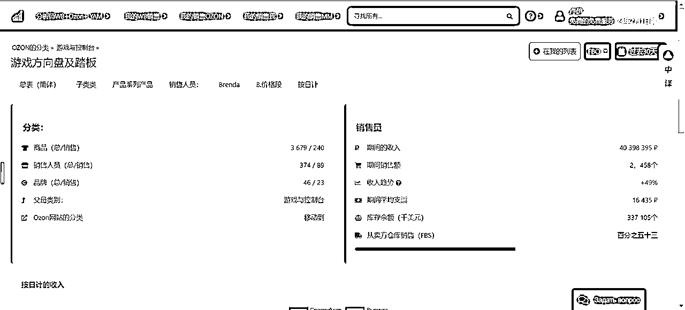
市场很小，老牌大卖看不上，做也不会认真做。小卖家被语言问题+文化差异拦着，即使有AI翻译，但翻译俄语还不太行，常出现语法错误。你们只要看到商品标题、商品详情出现语言错误的，甭问，指定是中国卖家机翻的，我们店的商品详情也仍然有语法问题，正在俄罗斯友人的指导下，逐一修改话术。
大卖家看不上、小卖家不会玩，我们的竞争对手就少了很多，对手也不专业，不专业到啥程度呢？不少卖家的产品主图，就是简单的白底展示，以前还有拿手机直接拍的，跟闲鱼一样。国内的电商玩法复制过去，基本是降维打击。
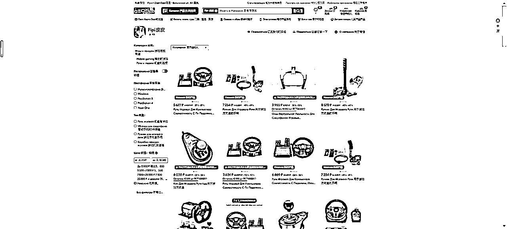
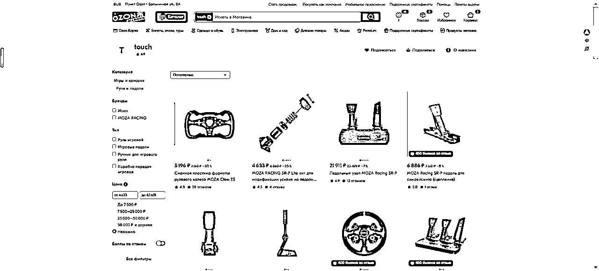
选品是玄学，没有标准答案，只有你真的开始卖了才知道选的对不对。在选品上我们踩了很多坑，最后才固定选品思路，找到了适合的工具和品类，希望大家引以为戒。
我们一开始听信谣言，以为A货也可以在平台上肆意流通。所以我们选了JBL的莆田货，在欧美全面退出的背景下，选欧美品牌是合理的，符合客户崇洋媚外的心理需求。拼多多的A货版本才100块钱，正版至少1500，我们当时只看商品图长的很像，以为客户分辨不出来，而且价格很便宜，还当捡到宝了。
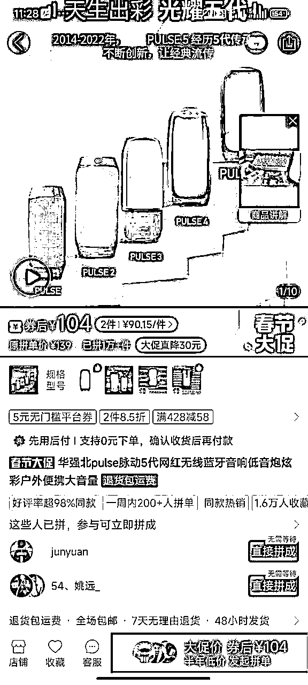
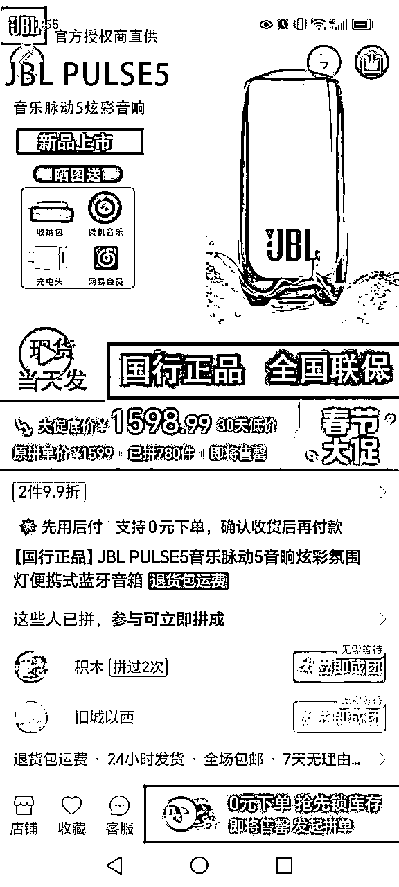
没错，在不少老毛子的认知中，欧美=高档，跟我们20年前一样。但是我们在发货之前没有检查产品质量，也没有核对商标是否与图片相符，导致这批货80%退货，20%退款，太轻视平台的结果就是一万多的货款全部损失。而且得到了一堆一星差评，大量的差评导致这个店的任何品都不会再有人看了，店铺彻底废掉。所以在产品质量面前，不能存在任何侥幸心理。
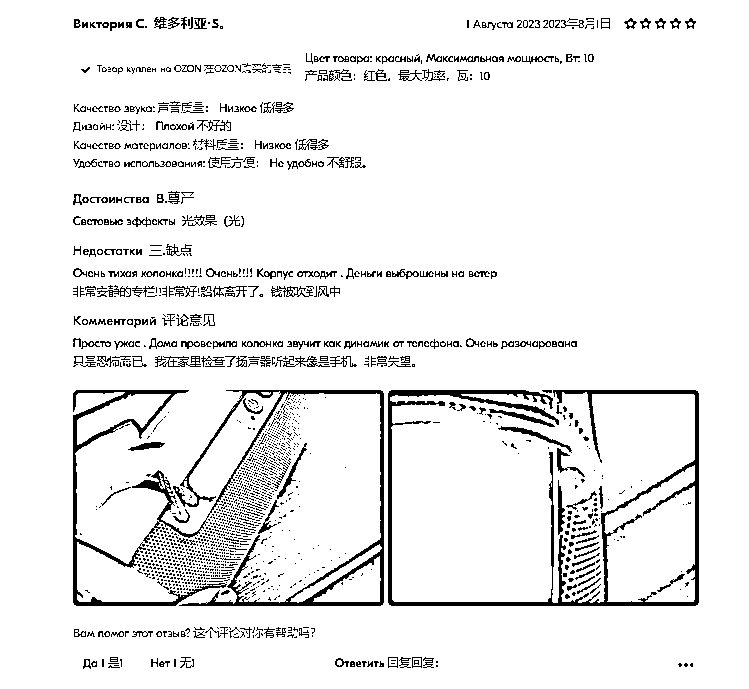
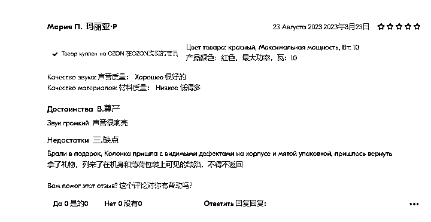
第二次，我们重搞了一家店，出单少退货多，头半个月才出1单，现在每个月平均才出10单，还有几单退货的。这个店的选品也没有逻辑可言，直接从淘宝/拼多多的热卖产品里面选出来的，都是中国人喜欢的玩意儿。后来发现中俄友好归友好，但市场差异很大，卖中国人喜欢的东西也不行。
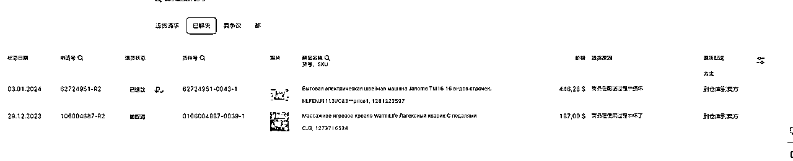
第三次尝试，我们选了更简单的模式：跟卖。跟卖就意味着，卖家的产品会直接跟在热销链接下面，通过别人的热销链接引流，实现借力打力。
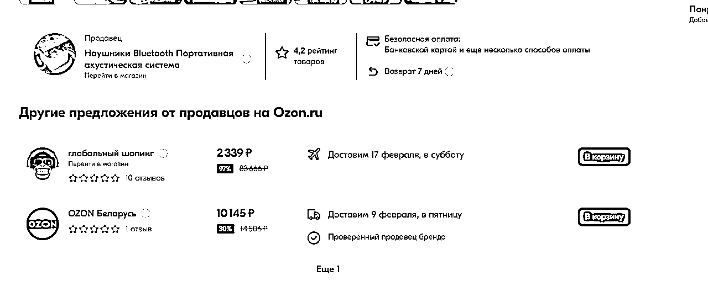
但我们一开始有误区：跟卖即出单。跟卖的本质是和热销产品打价格战，而做热销产品的卖家大多能拿到优势供应链和平台补贴，这样就会出现你卖99是亏钱，而人家卖88还有利润。和这样的卖家打价格战极其不明智，但是小白往往会听信卖软件的鼓吹：“操作简便，坐等出单”，实际上一键跟单很容易踩坑。
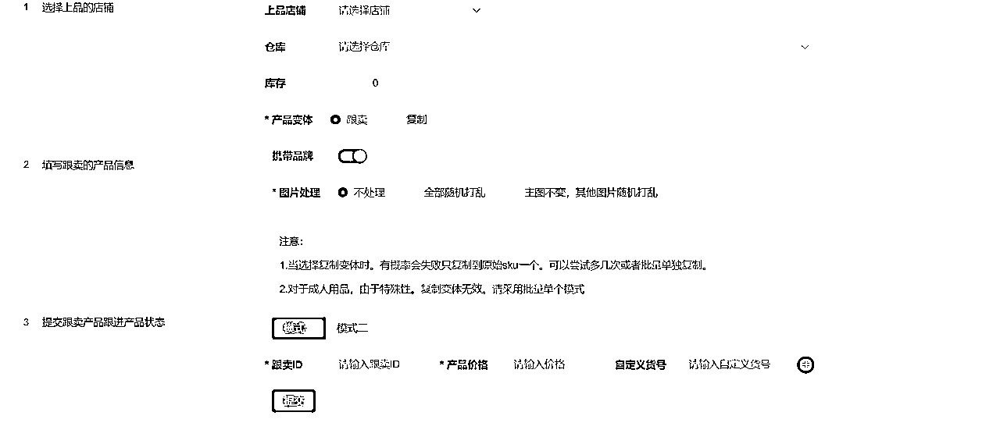
既然是打价格战，那么跟卖的核心就是核算价格。售价=货款+物流+平台手续费+退换货+汇损+广告费+利润，前置成本只有货款+物流费，其他成本都是回款以后，从成交额里面扣。所以选物流，选品类（不同品类手续费不一样）都有要求，合适的物流费，较低的手续费才能够保证价格优势。
物流商只能由ozon官方指定，包括中国邮政、兴远等十几家物流公司，五十种运输方式，空运，陆运，陆空联运等，只有知道正确的物流商+正确的运输方式，才能选出高性价比的高效物流。不同品类手续费从8%—20%，跨度很大，这也是重点优化方向。
小白一键跟卖的结果就是，出单不挣钱，甚至出单还亏钱。亏钱的单我直接取消不行吗？可以的，但频繁取消订单会被封店，即使不封店也会有损失，如下图：
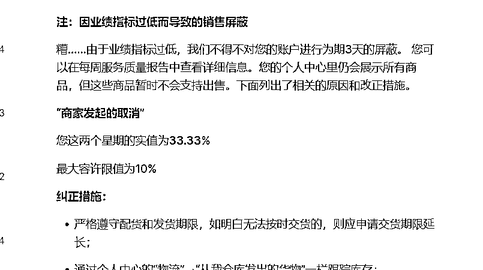
在尝试完跟卖之后，亏损的单我们全都取消了，所以这个店顺利地被封了，但没有亏损。
在试完前几种方法后，我们反思原因：我们要对俄罗斯市场更加了解，并高度了解自己售卖的产品，至少做到质量心里有数、品质自己把关、图文符合描述，这样才能在竞争中做到最基本的自保。
举个例子，我们选过汽车配件类目，但是汽车配件要求卖家很专业，售后服务也很麻烦。买家经常会问这个型号的汽车能不能用？买到手如何安装？我们连车都认不全，根本服务不了。汽车配件确实是好类目，但我们不了解产品，销量不佳。
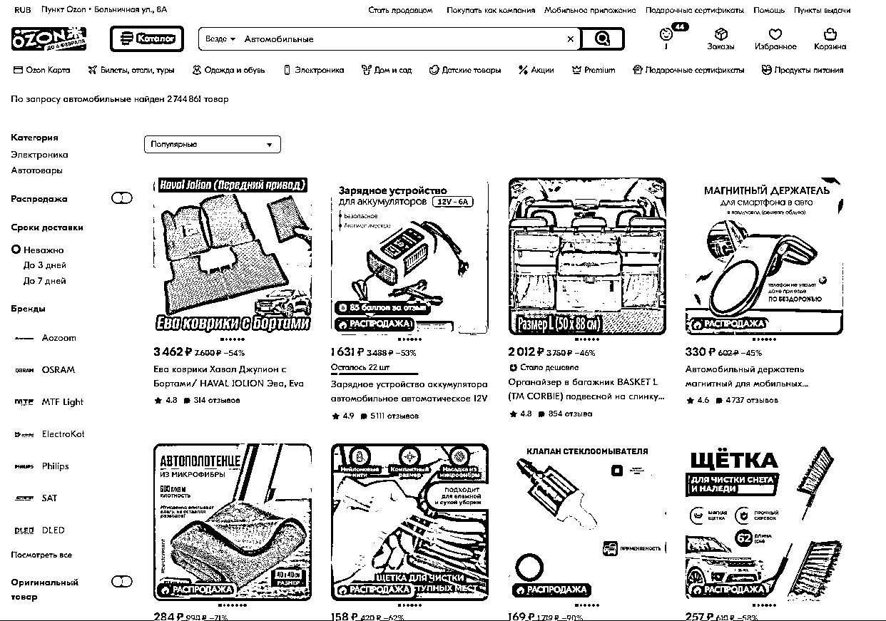
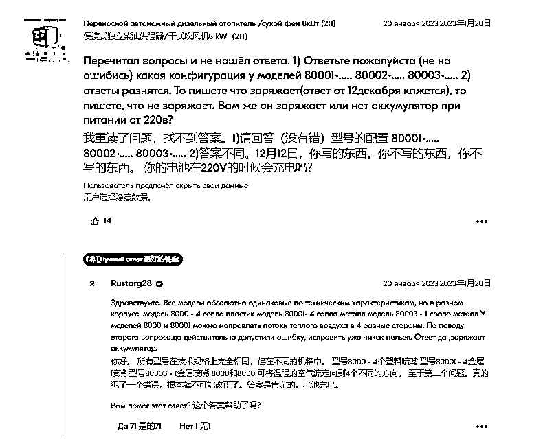
更改思路，我们从老毛子喜欢的东西入手，或者挑世界人民通用的产品，比如电动扳手。但不能和大卖家竞争，比如从华强北过去卖手机的、卖小米品牌的，都是实力超强的老板，我们根本玩不过。我们也没办法做iphone这种很硬的产品，卖这种产品小卖家必死：售价没优势，利润薄进价高，小卖家搞不了几单就gg。
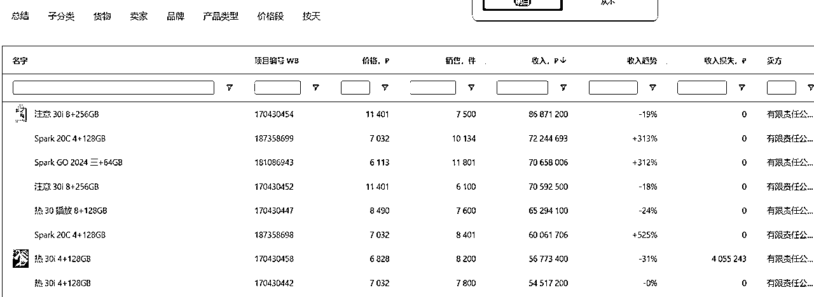
最后听了朋友的，做精品吧！想做精品有两个问题：1. 精品的核心是什么 2. 如何选类目/如何选品
我们有淘系、抖音、tiktok的卖货经验，对付ozon这种早期平台，精美的展示图、有吸引力的商品描述和可靠的质量就是核心。但选品靠感觉？那可不行。
我们开始寻求选品软件的帮助，市面上选品软件很多，比如萌啦，OZON bcs。我们一开始用的萌啦数据，一个月499，价格略贵。贵不要紧，可是不好用，里面有很多噱头，比如什么蓝海关键词、蓝海市场、潜力市场，根本就没意义。我们真正关注的是产品销量、销量变化、评论量，这些数据在萌啦不容易找到。当然不排除我们不会用，可我选软件就是为了简便，我才懒得学习这种工具软件。
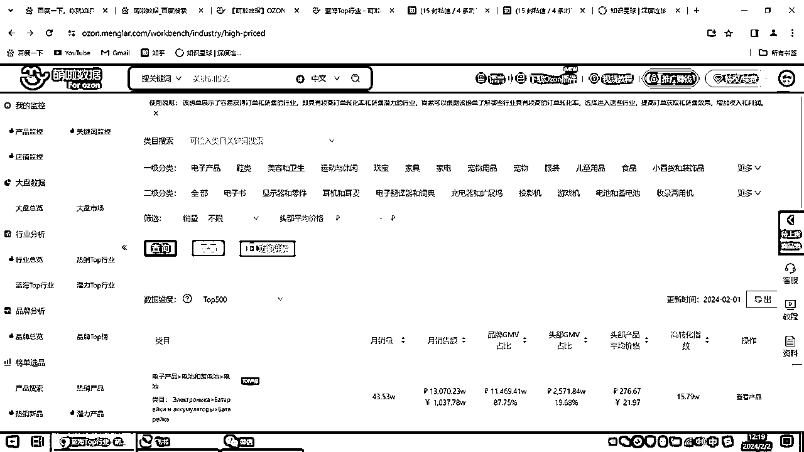
最后换了一家俄罗斯公司的选品软件，数据在俄罗斯本土，数据可信度有保障，对买家挺友好。
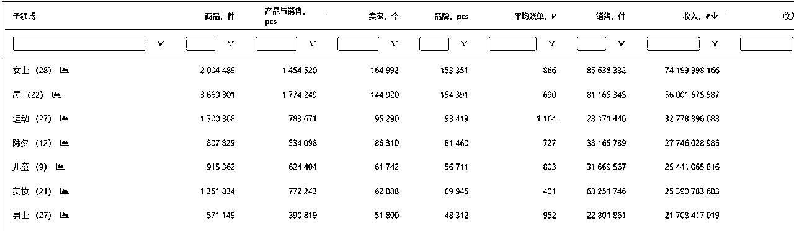
工具搞定了，继续选品。不能选太贵的，老毛子的购买力不能和美日相比，但最少要大于2000卢布。也不能选通货，很多新手上来就卖加湿器、耳机、书包、电子表这些东西。这种产品即便能出单，利润也低的可怜，根本盖不住成本。
最后，只能选小众蓝海产品，我们就去找那些冷门类目，还有评论数少的产品。比如热成像仪、金属探测器、激光水平仪，这种大众都没怎么听过的产品，我们做起来竞争压力才小。在尝试了几次之后，我们看上了游戏方向盘这个小类目，这个类目11月的销售额全俄罗斯才8400万卢布，约670万人民币，都是小卡拉米在里面玩。既然都是卡拉米，那谁怕谁，我们就冲了。
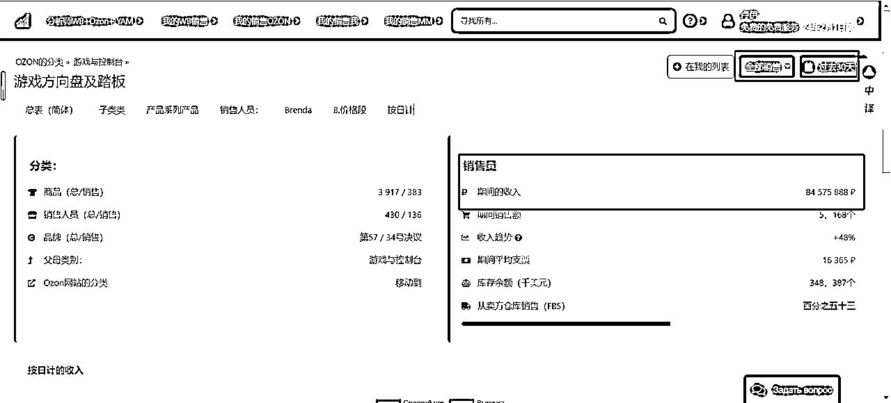
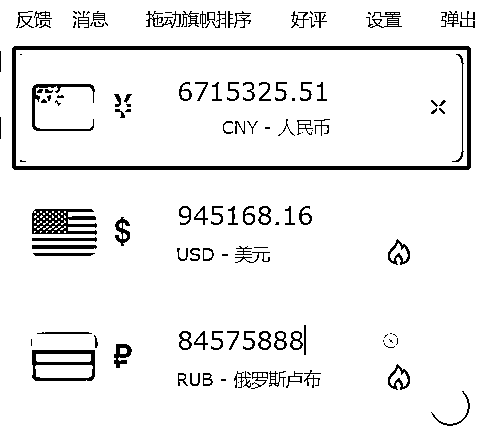
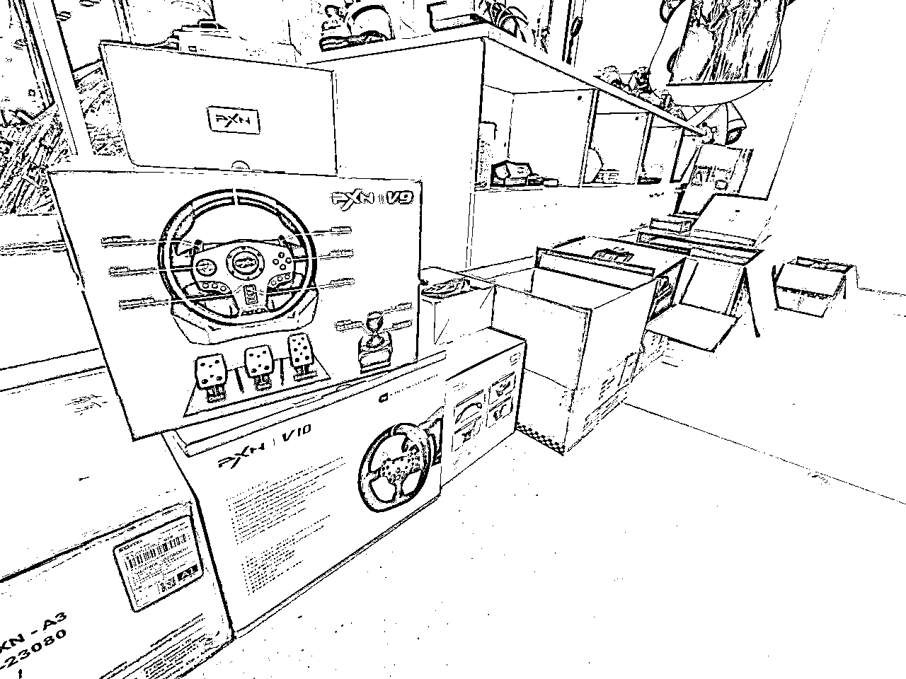
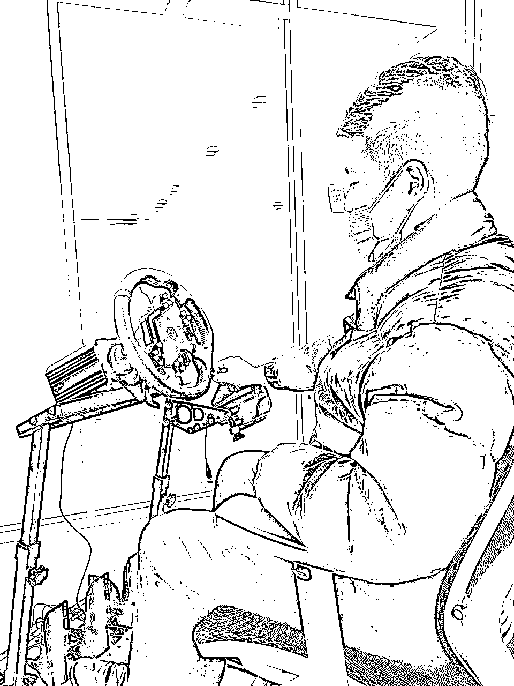
怎么才算小众？一级类目销售额在平台中下，二级销售额也在一级类目的中下，保证自己的类目几乎没人竞争，才有掘金的可能。别人想不到，你机会才大，比如：书籍，有人打差异化在OZON卖托福雅思二手资料，一样能挣钱。此外，徒步、钓鱼、狩猎类目竞争力也弱，空间较大。
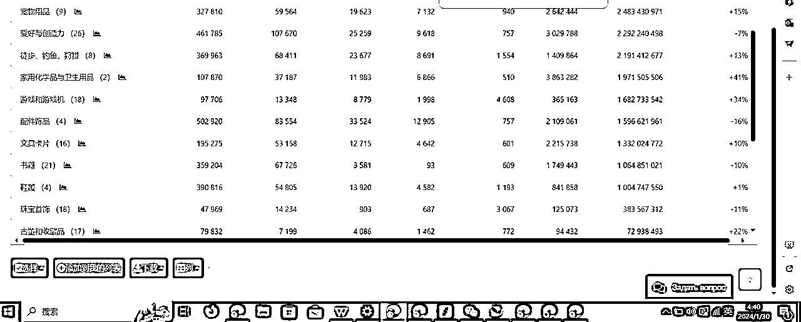
确定品之后就是上架，我们直接去拼多多、淘宝、京东、亚马逊找产品信息、搬运图片，做平台的搬运工。搬过来之后用阿里的图片翻译：一键翻译，商品介绍用deepL翻译，把这个产品支持在哪些平台打游戏，能玩哪些游戏都说清楚。
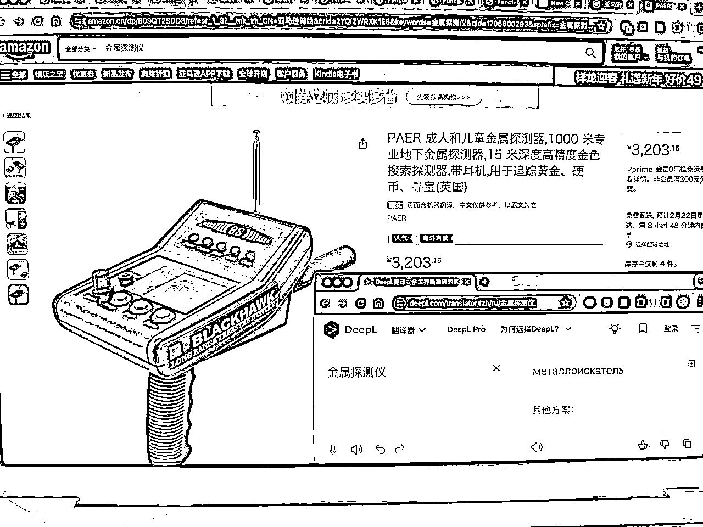
最后是作图，要符合老毛子的审美标准，现在用白底图加边框即可，虽然我们只比同行多了个边框，多个边框的差异，就能带来很多成交量。进一步地，可以给产品图设计边框、图标、背景，再用抠图功能拼一个主图，差异化就出来了。
用美图秀秀即可高效出图，不需要PS，门槛低、效果好。同时要去youtube等网站，引用视频来丰富你的详情页，有图有视频才是好产品卡。
上架之后，我们要关注买家的点击量、他浏览了多少次这个产品，还有就是这个产品在这个类目里面的搜索排名。卖家不要害怕开广告，目前这个阶段，ozon投广告的性价比还是很高的，主要有模板广告和搜索推广两种。
卖家可以自己创建一个模板，放在OZON的首页，用来吸引买家，将你想要推广的产品放进去。
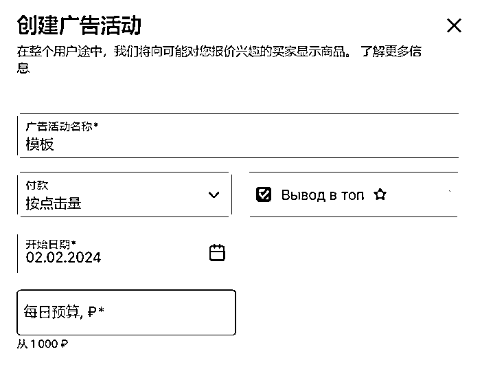
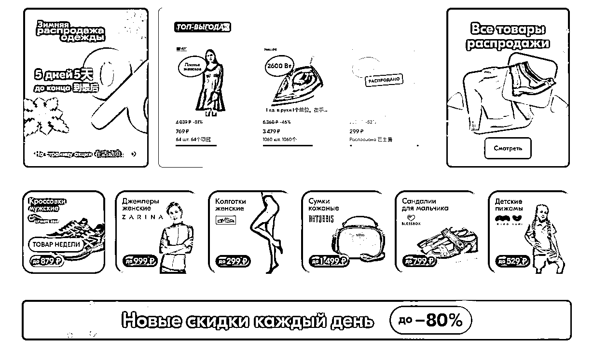
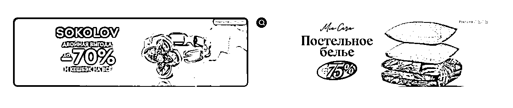
这种方式引流的效果不错，会让许多新用户看到你的商品。根据客户点击量收费，每日预算最低要求1000卢布，大概80人民币，预算花完时，平台会减少商品在首页的展示。
买家搜索某关键词或产品时，如果你开启了搜索推广，投流越多的商品位置越靠前，吸引他们购买。
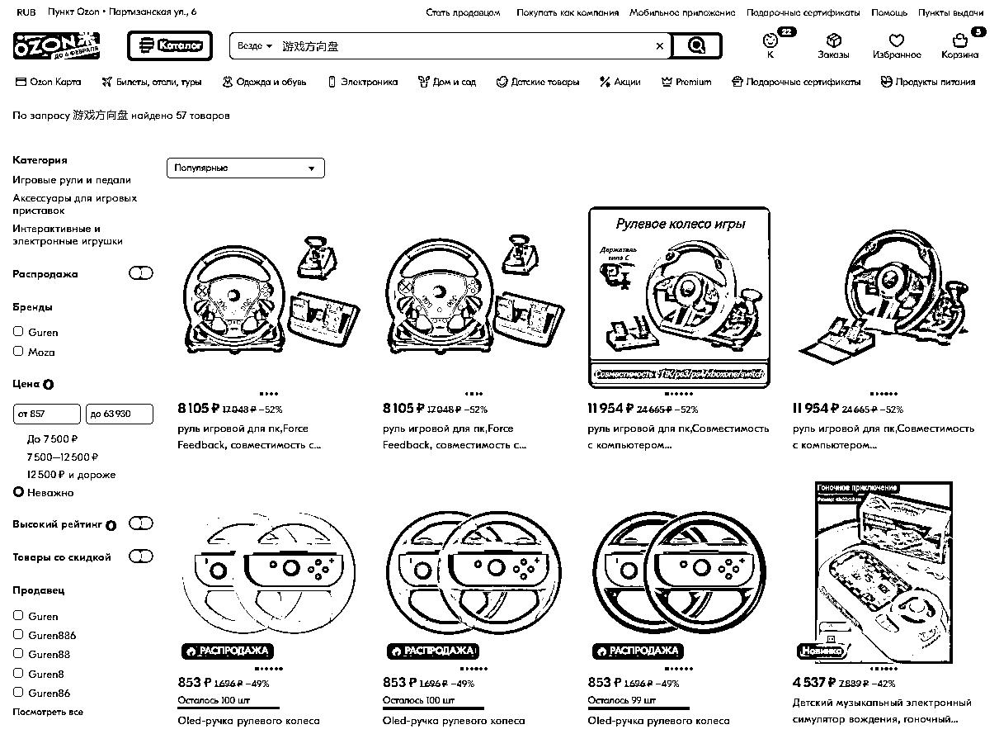
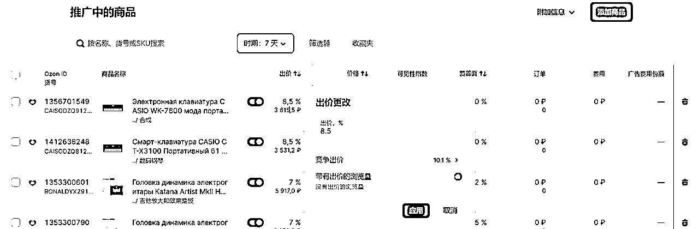
开启搜索推广的方法很简单，只需添加已经上架的产品，并调整商品价格比例即可。搜索推广比广告模板更便宜，且精准度更高。现在ozon官方赠送每个新店铺5000卢布，专门用于搜索推广。
一般来说新店、新上架的商品，搜索排名比较低，我们会请肉身在俄罗斯的朋友帮我们做测（shua）评（dan）。插一句嘴，平台目前对shua单放任不管，也可能管不了。每个链接不需要shua很多单，ozon确实像十几年前的淘宝，以下为测评截图。
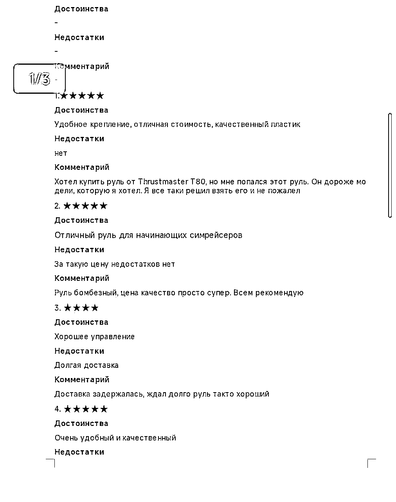
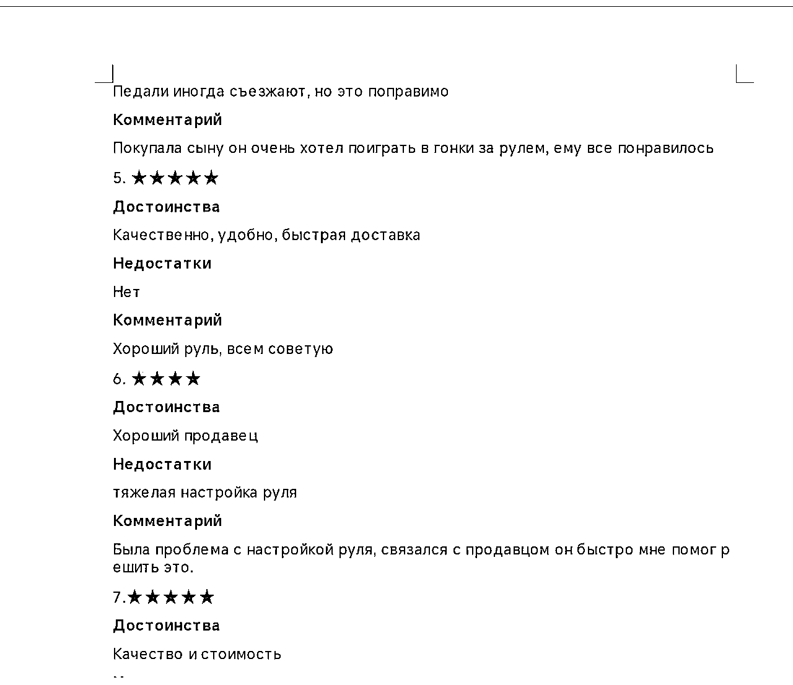
在冷门类目中，50个优质评论就能够霸占类目头部，相对于国内来说竞争不激烈。所以我们也就做了一百多个测评来保证这个产品的排名。可以看到数据是断崖式领先的，然后就等客户下单吧。
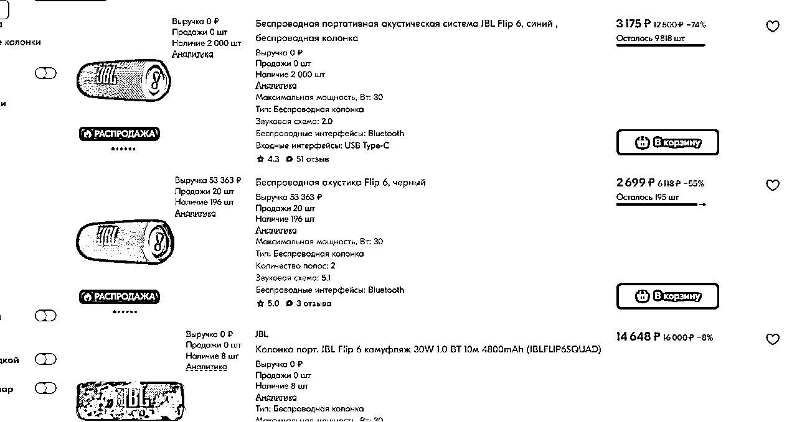
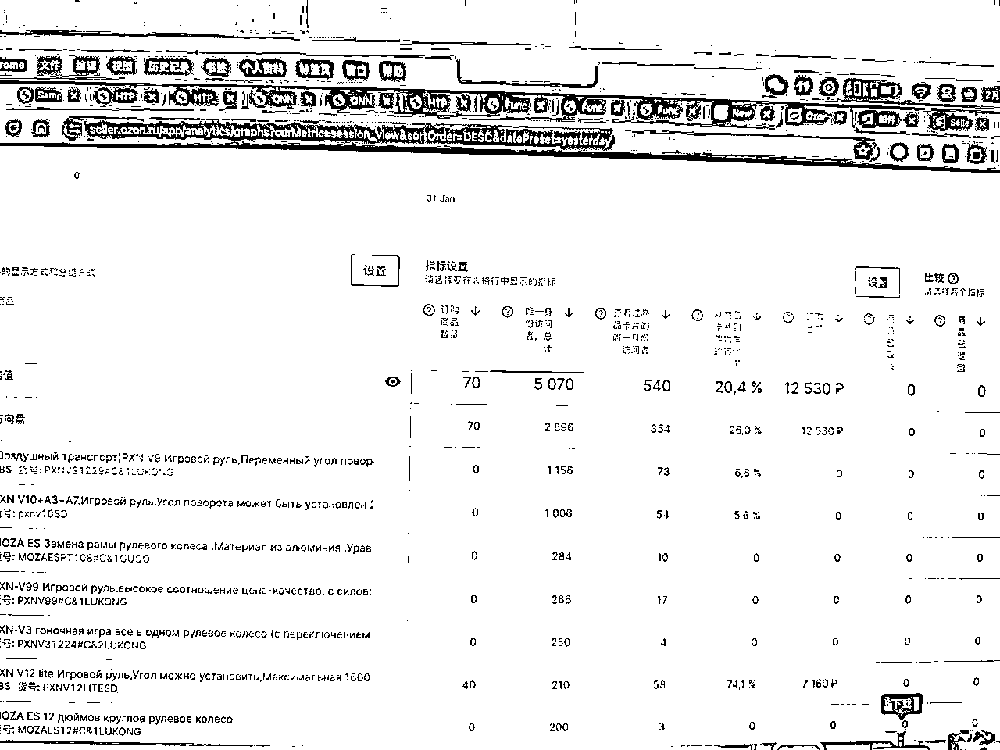
ozon本土店有讨价还价功能，跨境店没试过，不确定有没有。客户可以给你发私信，要求具体的折扣价，比如选择5%OFF，就是打95折。你可以同意或者拒绝，也可以修改折扣再发给他，客户如果同意就直接成交。只要不亏损，都是直接同意的，就算不挣钱也相当于免费shua了一单。
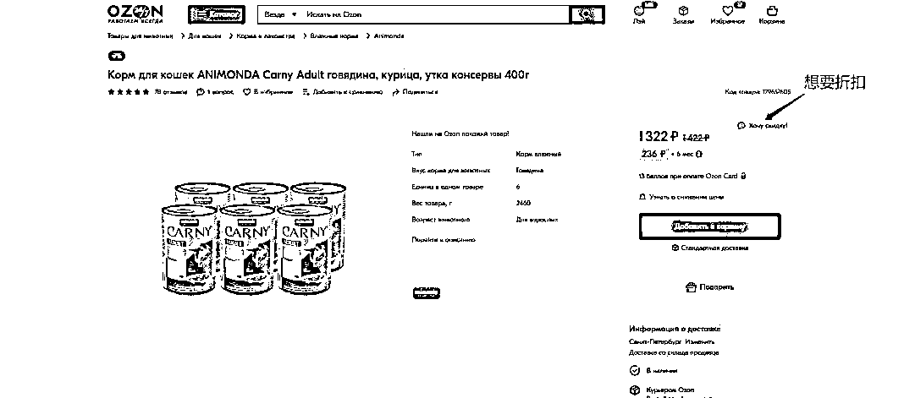
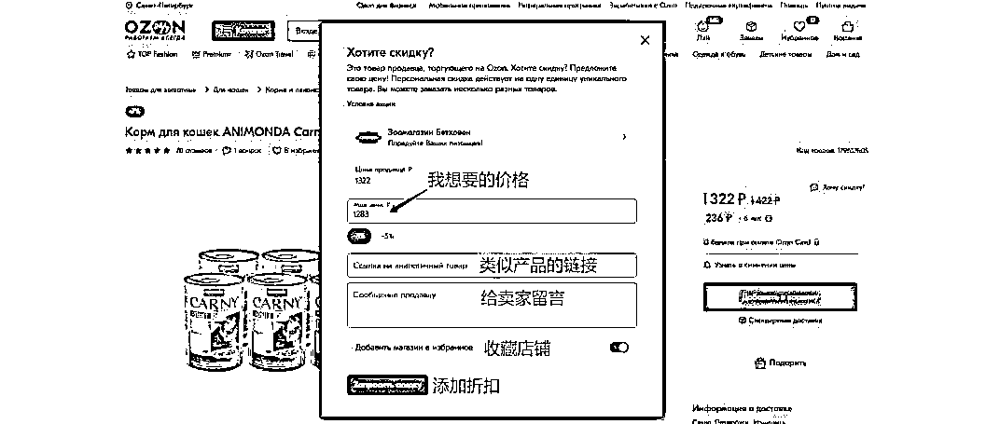
客户下单以后，我们需要选择一个合适的物流发货。ozon的物流是由ozon官方指定的，有十几家公司、五十种物流方式，一开始看的我们眼花缭乱。在朋友推荐下，我们最后选的是GUOO和CEL，GUOO公司是后起之秀，物流速度快，价格还便宜。CEL有政府支持，公司更有实力，实际中我们用GUOO更多。
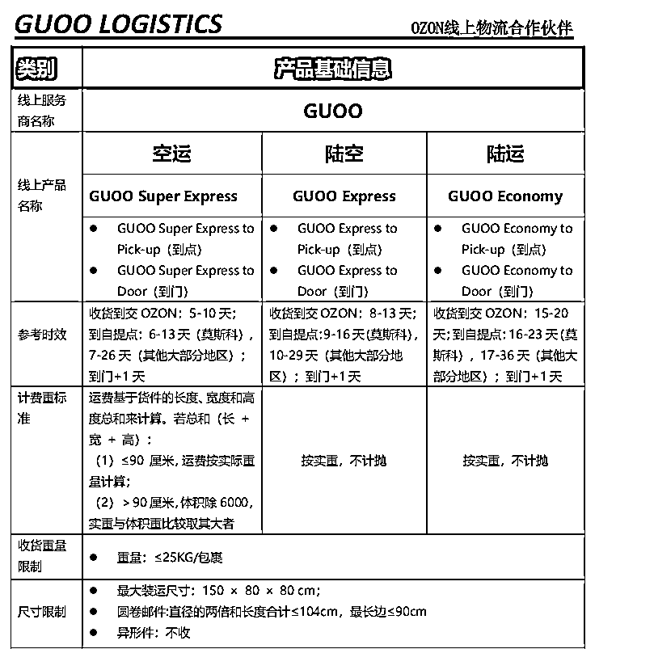
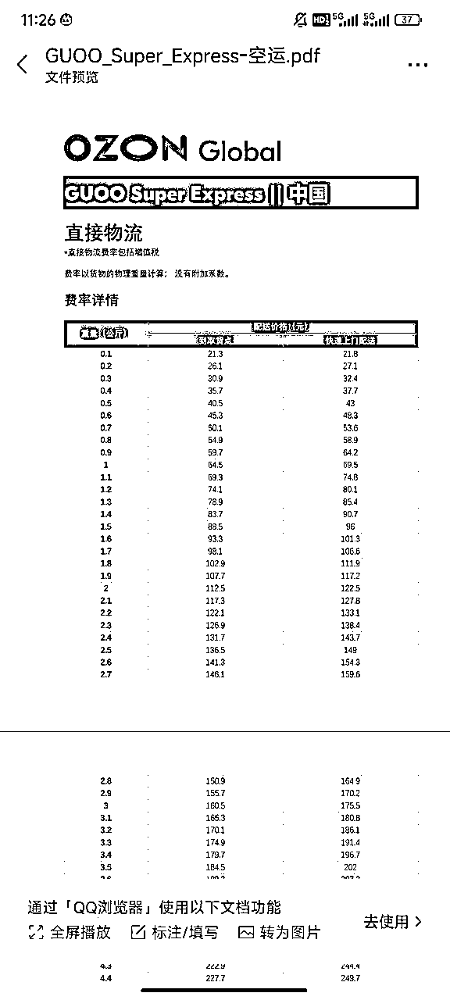
刚开始我们还以为得报关、清关，想想就麻烦。后来才知道这些琐事不需要了，只要把货寄到GUOO的指定地点，然后就不用管了。他们全权负责打包、贴面单、仓储，什么活都干了，确实非常方便。
所以客户下单以后，我们从pdd/1688/淘宝/京东下单（无货源的情况下），直接寄到GUOO给我们的地址。一般来说，从客户下单到客户签收，陆空联运需要国内物流时间＋10天，空运需要国内物流时间＋7天，国内物流时间指的是从我们下单，寄到GUOO所需的时间。我们发大件选陆空联运，小件选空运，能空运尽量空运，客户很在意到货时效。
除此以外，我们要对产品的尺寸、重量很清晰，因为物流费就靠这个定价的。比如说：500克以内的轻小件可以用super small类型的物流，运费是15+34/KG，超大件则建议使用陆运，运费是18+44/KG。
买家签收之后，销售额会自动打到ozon账户上面。然后ozon会从中里面扣除物流费、广告费、平台手续费等等，剩下的就是我们实际能拿到的钱了。这个钱每个月16号可以提现，一般是通过pingpong或者连连，才能提到我们自己的银行卡上。还有一个限制，提现需要1000美金起，这个会卡住很多新卖家，一个月卖不到1000美金的太多了。
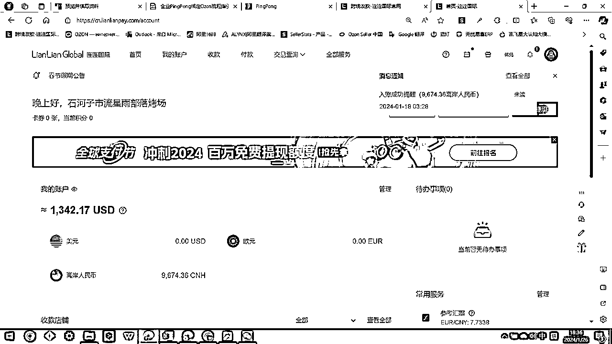
如果你只是开个店体验一下流程，没卖到1000美金，可以联系客服，发送“退店”二字就可以退掉店铺，3个月内可以收到款项，去大胆尝试吧，没必要太担心。
欢迎转发、评论。子白微信zibaishuo，欢迎交流哦
详细开店流程在这儿！：